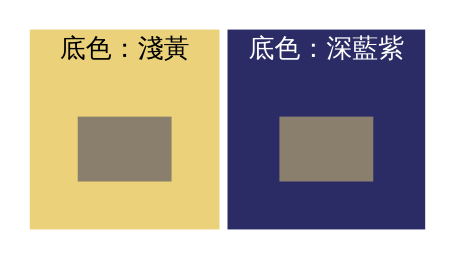
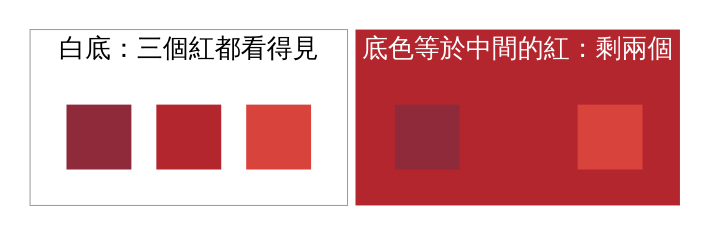
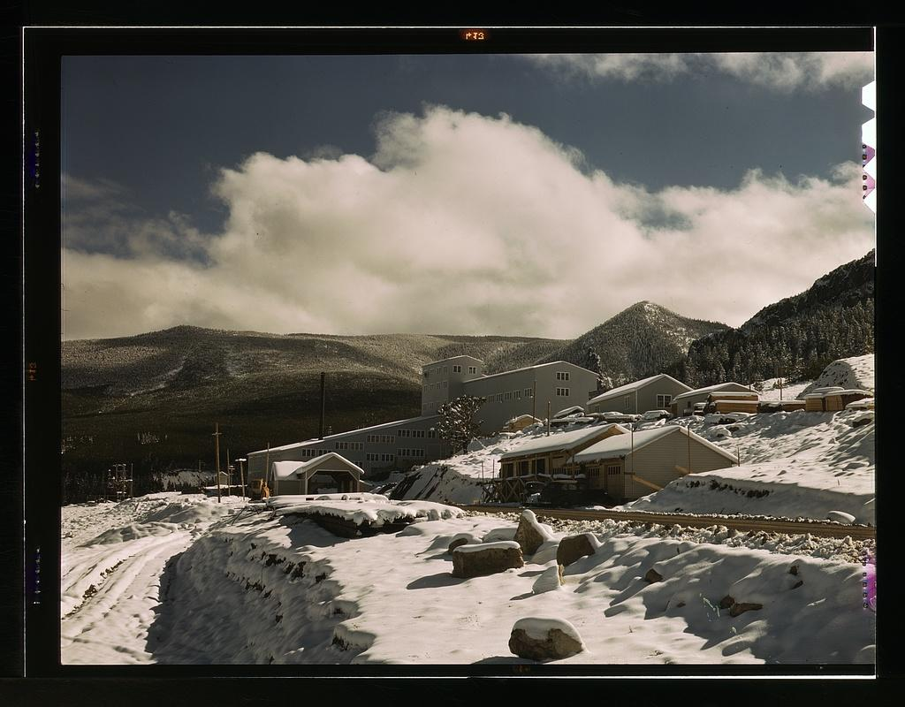
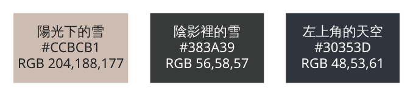

經典理論 《Interaction of Color》第四章不從顏色講起，先擺了三盆水。左邊熱水，中間溫水，右邊冷水。兩手先分別泡進左右兩盆，再同時放進中間那盆，左手會覺得冷，右手覺得熱，可是水只有一種溫度。Albers 說，這是物理事實與心理效果之間的落差，觸覺會騙人，眼睛也會。接著他寫，第一個練習就是讓同一個顏色看起來不一樣，並且要學生在黑板和筆記本上抄下一句話：顏色是藝術中最相對的媒材。
第一章更直接。他說，如果對 50 個人說「紅」，他們腦中會出現 50 種紅。就算指定一個大家都看過無數次的紅，例如全美國都一樣的可口可樂招牌紅，請大家從上百張紅色樣本裡挑，結果還是各挑各的。他的結論有兩個：人對顏色的記憶很差，比對旋律的記憶差得多；日常語言裡的顏色名稱也太少。
史料 Albers 1888 年生於德國 Bottrop，1920 年進入威瑪的包浩斯，後來留校任教。1933 年包浩斯的教師投票關校，不願配合納粹政權；他和妻子 Anni 前往美國北卡羅來納州的黑山學院（Black Mountain College），在那裡開始開色彩課，一直教到 1949 年。1950 年他到耶魯大學主持新成立的設計系，1958 年退休。依耶魯大學 2023 年的報導，《Interaction of Color》在 1963 年 6 月由耶魯大學出版社出版，首版是兩大冊、150 幅絹印色彩圖版，限量 2,000 套，每套 200 美元。Albers 在 1971 年平裝本序言裡自己補充：這套書重 22 磅，價格和重量都讓人立刻想到要出口袋版。書裡大部分圖版是他學生的作業。
經典理論 以下依 Albers《Interaction of Color》（Yale University Press, 1963；引自 Internet Archive 所收 50 週年版重印的原版正文）。
出發點 序論第一段說，這本書記錄的是一種「實驗性」學習與教授顏色的方法。他接著提出三個判斷。第一，眼睛看到的顏色和顏色的物理狀態之間幾乎總有落差，所以顏色是最相對的媒材。第二，要有效使用顏色，得先承認「color deceives continually」（顏色一直在騙人）。第三，學習的起點不是色彩系統，而是先體會「同一個顏色可以有無數種讀法」。
先做再談理論 Albers 說他的書把一般「理論與實踐」的順序倒過來，把實踐放在理論前面，因為理論本來就是實踐的結論。他用音樂打比方：懂聲學不會讓人變得有音樂性，同樣地，任何色彩系統本身都養不出對顏色的敏感。所以書不從光學、生理學或波長講起，直接進入一連串練習，每個練習附圖說明，用意是提示一種研究方法，不給標準答案。
練習一：一個顏色看起來像兩個（第四章） 做法很簡單：兩個同色、同大小的小長方形，各放在一大塊顏色差很多的底色上。全班作品收齊後分成「比較有效」和「比較沒效」兩堆，學生從比較中自己發現，改變來自周圍的影響。他也觀察到，底色彼此差得越多，對小方塊的影響越強（見圖 1）。

圖 1｜Albers 第一個練習的示意：兩個中央長方形是同一個灰褐色（#8A7F6C），底色一淺一深、一黃一藍紫。示意圖，實際效果因螢幕與觀看距離而異。來源：本課程依 Albers《Interaction of Color》1963 第四章練習繪製。
練習二：兩個不同的顏色看起來一樣（第七章） Albers 說這個比第一個更刺激。他的推理是：既然底色可以把顏色的色相和明暗「推」向反方向，那麼也可以把不想要的性質「減掉」。他舉的實驗是三個不同的紅。放在白底上，三個都只是「紅」；放在另一種紅的底上，它們的差別變明顯；放在跟其中一個一模一樣的紅底上，只剩兩個看得見，第三個被底色吸收了。他由此歸納出一條規則：任何底色都會從它承載的顏色裡減去自己的色相，底色的明暗也一樣會被減去（見圖 2）。

圖 2｜Albers「顏色的減法」實驗示意。兩邊都是同樣三個紅（由左至右：#8E2A3A、#B3262E、#D8433B）。右邊的底色等於中間那個紅，它就消失了；剩下兩個紅，一個顯得更暗沉，一個顯得更亮。示意圖。來源：本課程依 Albers《Interaction of Color》1963 第七章繪製。
為什麼用色紙 Albers 的課幾乎全用色紙，不用顏料。第三章列了幾個理由：色紙不必調色，同一張紙可以重複使用而顏色完全不變，也不會有筆觸和質感干擾判斷。紙張來源也很平常，印刷廠和裝訂廠的廢紙條、包裝紙、雜誌剪下來的廣告、油漆色卡都行。他不鼓勵買照某種色彩系統配好的成套色紙。
實證研究 Albers 說的「同一個刺激、不同的讀法」，2015 年有一組大規模的資料。Lafer-Sousa、Hermann 與 Conway 在《Current Biology》第 25 卷發表的研究，以網路問卷詢問 1,401 人一張洋裝照片的顏色：57% 說藍黑，30% 說白金，11% 說藍棕。研究者提出的解釋是，每個人對照片裡的光源有不同的預設：預設偏冷的日光，就把洋裝看成白金；預設偏暖的燈光，就看成藍黑。他們把同一件洋裝放進帶有明確冷光或暖光線索的場景，大多數人的判斷就跟著光源線索走。照片的像素沒有變，變的是觀者替它補上的光。
史料 1942 年 8 月，美國政府農業安全局（FSA）與戰時新聞局（OWI）的攝影師 Russell Lee 在蒙大拿州拍了一組彩色正片。美國國會圖書館的著錄標題是「First snow of the season in the foothills of the Little Belt Mountains」（Little Belt 山麓的初雪）。畫面上半是厚重的雲和深色天空，中段是山坡與幾棟建築，下半是一片新雪，左下有一道被陰影蓋住的溝坡（見圖 3）。

圖 3｜Russell Lee，〈First snow of the season in the foothills of the Little Belt Mountains, Lewis and Clark National Forest, Meagher County, Montana〉，1942 年 8 月，彩色正片（國會圖書館數位編號 fsac.1a35029）。畫面中的建築，著錄資料沒有說明。來源：Library of Congress Prints and Photographs Division，FSA/OWI Color Photographs。授權：Public domain，來源頁面
以下是本課的分析，不是攝影師留下的說明。
我用程式在這張照片的數位檔上取了三塊區域的平均顏色（見圖 4）。前景陽光下的雪是 RGB 204、188、177。左下溝坡陰影裡的雪是 56、58、57。左上角的天空是 48、53、61。陰影裡的雪和天空，三個數值相差都在 8 以內；它和陽光下的雪，每個數值都差了 120 以上。單看數字，陰影裡的雪該歸到天空那一類。

圖 4｜從圖 3 數位檔取樣的三塊平均色（取樣範圍各約數百到兩千個像素，使用 Wikimedia Commons 提供的 960 像素寬版本）。數值反映的是這份掃描檔，不等於 1942 年現場的光，也不等於原始正片。來源：本課程依圖 3 實測取樣繪製。
可是看照片的人不會把那道溝坡看成一片天空。我們讀到的是「被陰影蓋住的雪」。眼睛用的線索來自周圍：溝坡的邊緣緊接著亮的雪，表面有雪的起伏紋理，位置在地面上，和前景的雪連成一片。這正是 Albers 說的物理事實與心理效果的落差。在這張照片裡，兩組幾乎相同的數值被讀成兩種東西；陽光下和陰影裡差距極大的兩組數值，卻被讀成同一片雪。
相機這一端沒有這種判斷。底片或感光元件只記下每一點進來多少光，它不知道那是雪。攝影師調整曝光與白平衡，等於在替觀者決定「哪一塊算白」。Albers 那三個紅放在紅底上的實驗，換到照片裡就是這件事：照片裡的每個顏色都被它周圍的顏色重新讀過一次。
史料 Albers 從 1950 年起畫〈Homage to the Square〉（向正方形致敬）系列，一直畫到 1976 年過世。依 Judd Foundation 引用 Jeannette Redensek 的研究（依二手文獻），這個系列超過兩千件；他把板子平放在桌上，從中央的方塊往外畫，油彩直接從管子擠到板上，用調色刀抹開，不用遮蔽膠帶或直尺。紐約大都會藝術博物館藏有其中一件〈Homage to the Square: With Rays〉（1959，油彩、Masonite 纖維板，121.9 × 121.9 公分，館藏號 59.160）。作品仍受著作權保護，本課不放圖，請到大都會博物館典藏頁觀看。
這個系列的構圖幾乎固定：幾個正方形一層套一層。形狀不變，只換顏色。看的時候可以試試三件事。第一，盯著最內層的方塊，看它是往前凸還是往後退。第二，用兩根手指遮住外層，只留一條內層的顏色，看它跟沒遮時是否不同。第三，比較相鄰兩層的交界線，有些交界看起來很硬，有些幾乎融在一起。以上是觀看的建議，你看到的結果可以跟典藏頁的說明或其他人的觀察對照。構圖固定以後，畫面上唯一會變的就是顏色之間的關係，這讓整個系列像是把《Interaction of Color》的練習畫成了正式作品。
誤解一：《Interaction of Color》是一套配色系統。 Albers 在序論裡明說，起點不是色彩系統，也不是機械套用色彩和諧的規則（經典理論）。他在色紙那一章甚至不建議使用依 Munsell 或 Ostwald 系統配好的成套色紙。書裡的練習是訓練眼睛的方法，沒有提供可以照抄的配色表。
誤解二：顏色是相對的，所以怎麼看都可以，沒有對錯。 Albers 的練習之所以能在課堂上重複進行，是因為效果有規律：底色差得越多，影響越強；底色會減去自己的色相與明暗。洋裝照片的研究也顯示，人與人之間的差異可以用「預設光源不同」來解釋，加入明確的光源線索後，多數人的判斷會一致（實證研究，Lafer-Sousa 等 2015）。相對，指的是顏色取決於條件，條件本身可以分析。
誤解三：照片記錄的是物體真正的顏色。 圖 4 的數值只屬於這份數位檔。同一個場景，換一種底片、一台掃描器或一組白平衡設定，數值就會不同。照片和眼睛一樣，在給出顏色之前已經經過一連串處理；不同的是，眼睛會依周圍的線索替我們修正，相機只照設定修正。
看（5 分鐘）：記憶裡的綠 先不要看任何東西，在紙上寫下你記憶中台灣郵筒的綠色，像什麼東西的綠（例如某種葉子、某個飲料瓶）。接著從家裡找三件綠色的物品，挑出你認為最接近郵筒綠的那一件，用手機拍下來。下次經過郵筒時，把這件物品的照片拿出來對照。這是 Albers 第一章的「可口可樂紅」實驗的縮小版。
做（10 分鐘）：讓兩個不同的顏色看起來一樣
回顧（5 分鐘）
來源 | 類型 | 查核日期 |
經典理論、史料 | 2026-11-23 | |
史料（大學新聞報導） | 2026-11-23 | |
史料 | 2026-11-23 | |
Josef & Anni Albers Foundation：Interaction of Color（課程由黑山學院開始、在耶魯完成） | 史料 | 2026-11-23 |
實證研究 | 2026-11-23 | |
二手文獻 | 2026-11-23 | |
The Metropolitan Museum of Art：Homage to the Square: With Rays, 1959（59.160；經 Met 開放典藏 API 核對作品資料） | 典藏資料 | 2026-11-23 |
史料（典藏著錄） | 2026-11-23 | |
圖片授權 | 2026-11-23 |
延伸閱讀：《Interaction of Color》原版正文約 80 頁（Albers 在 1971 年序言中的說法），可以挑第四、七章，搭配手邊的廣告紙和包裝紙邊讀邊做。下一堂談色溫，會回到「光源改變顏色」這件事。